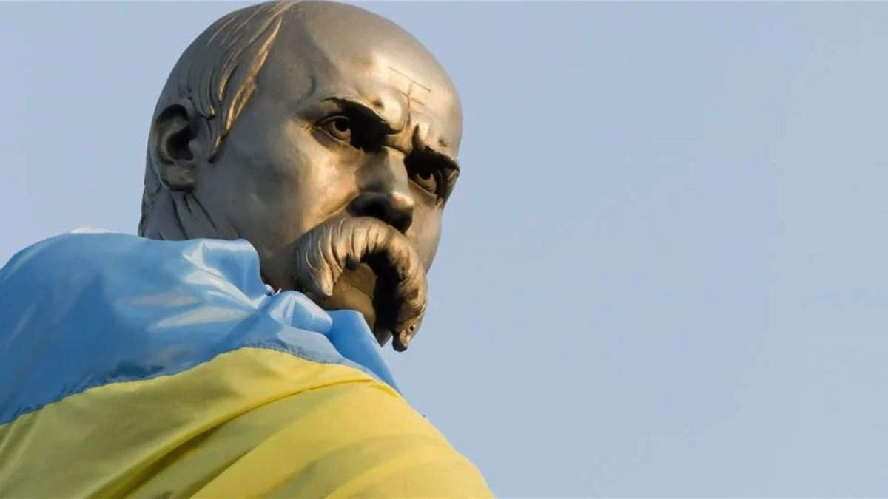

Тарас Шевченко
Шевченко є основоположником нової української літератури і родоначальником її революційно-демократичного напряму. Саме в його творчості повно розвинулися ті начала, які стали провідними для передових українських письменників другої половини ХІХ–початку ХХ століть. Тенденції народності й реалізму були вже властиві в значній мірі і творчості попередників Шевченка. Він перший в українській літературі виступив як істинно народний поет, твори якого з усією повнотою відбили почуття й думки трудящих мас, їх віковічні визвольні прагнення.
дізнатися більше